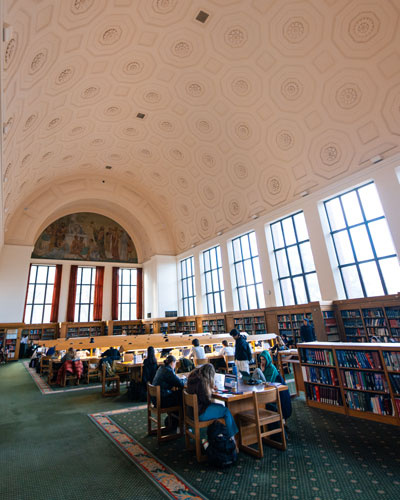
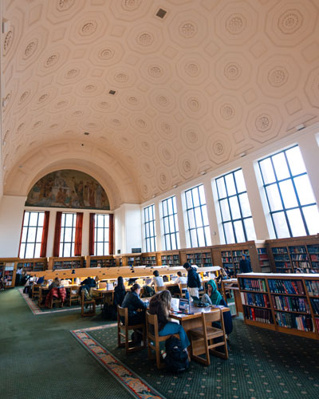

MICHIGAN IS OUR HOME
There are approximately 4,000 students at the University of Michigan who are among the first generation in their family to attend college. While being the first to do anything can be a bit dauntying, going off to college is also a major life milestone.
Thankfully, there are useful networks and programs at U-M that can help you connect and thrive on campus. Use this website to help you find the resources you need. Explore your options. Find your community and your wau. Make yourself at home.
First-Gen Gateway
The First Generation Student Gateway serves as a starting point to get connected to resources for first-generation students. Housed in the Office of Academic Multicultural Initiatives (OAMI), the Gateway is linked to several partner offices and is a home for support for first-generation students. The Gateway is for all first-generation undergraduate and graduate students and their allies. The Gateway is open during regular business hours (8AM-5PM). You can use the space for:
- Finding resources for first-generation students
- Connecting to partner offices that support first-generation students
- Meet with First Generation Project Manager Terra Molengraff
- Study space
- Meeting space
Location
The Gateway is located in the Office of Academic Multicultural Initiatives on the 3rd floor of the Student Activities Building at 515 E. Jefferson St.
For more Information about First-Generation Resources Visit the Dedicated Website here.
Below are some of graduate student's favorite study spots: the Law Library Library and the Hatcher Library.
 
